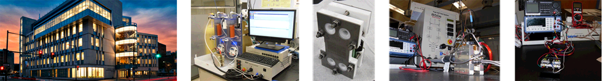

The ECSL is located in the Science Center Research Complex adjacent to Drexel's University City Campus, and encompasses approximately 1500 sq ft of space equipped with two fume hoods. The laboratory is equipped to perform advanced performance diagnostics of static and flow-assisted electrochemical systems and conduct a wide variety of performance diagnostics, wet chemistry, synthesis, manufacturing procedures, and computational studies.
Some of the major equipment in ECSL includes: a fully automated redox cell test system for testing of static and flow-assisted electrochemical devices, a high-temperature fuel cell testing station, a potentiostat/galvanostat configured with multiple channels and current booster, a high performance modeling workstation with dual hex-core Intel Xeon processors and 96 GB of RAM, a TAIG Tools Micro Mill DSLS 3000 vertical CNC milling machine, an electrochemical flow capacitor testing station, a Carbolite CTF 17/25/300 tube furnace capable of up to 1700°C, and several peristaltic and syringe pumps. ECSL also has a complete wet lab setup including two chemical fume hoods, a precision micro-balance, ultrasonicator, stirring hot plates, and high performance computer workstations with COMSOL, Abaqus, ANSYS, Pro/ENGINEER, AutoCAD, and MATLAB.
Drexel Centralized Research Facilities
Additional tools are available through the Centralized Research Facilities at Drexel University. The CRF at Drexel University houses state-of-the-art analytical, imaging, and micro-fabrication facilities. Equipment available at the CRF includes several scanning electron microscopes (SEM), an environmental scanning electron microscope (ESEM), Raman micro-spectrometers, optical profilometer, transmission electron microscope (TEM), dual-beam forced ion beam scanning electron microcope (FIB-SEM,) x-ray diffraction (XRD), nano-indentation, microfabrication, x-ray computed microtomography (XCT) and other characterization equipment. Microfabrication equipment includes inductively-coupled plasma deep reactive ion etching, e-beam and thermal evaporators, optical profilometry, photolithography etc. Our Team has access all the equipment in this facility.
For more information about CRF, please visit http://crf.coe.drexel.edu/
Drexel Machine Shop
The Drexel machine shop is located in the Hess Research Complex. This full service machine shop includes 5 manual Bridgeport vertical mills and a Haas vertical CNC mill, 5 manual horizontal lathes and a Haas horizontal CNC lathe, a Brother electrical discharge machining (EDM) machine, a Versa Laser cutter, a Dimension Elite rapid prototyping machine, and a full welding and finishing setup. Our team members have access to all equipment in the Drexel Machine Shop.